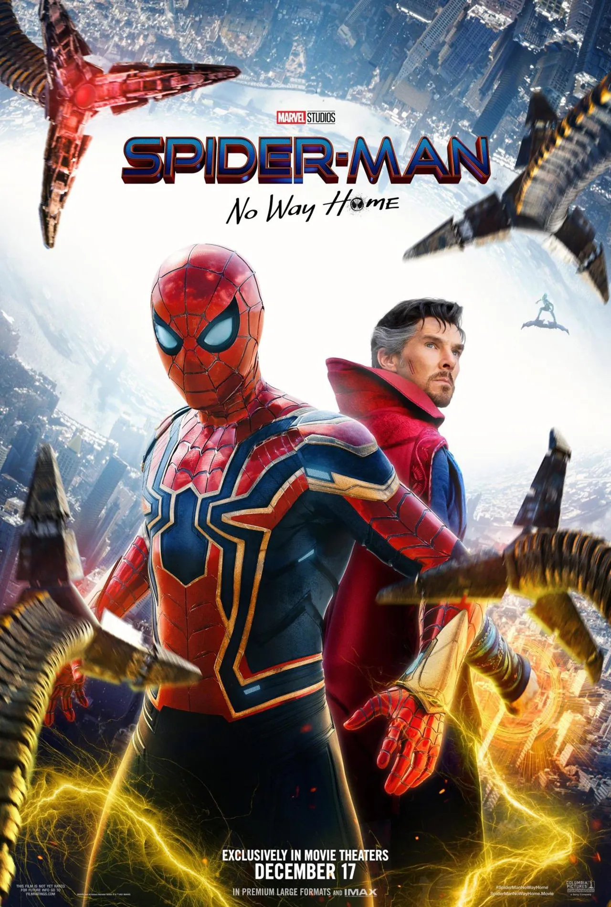

Em Homem-Aranha: Sem Volta para Casa, Peter Parker (Tom Holland) precisará lidar com as consequências da sua identidade como o herói mais querido do mundo após ter sido revelada pela reportagem do Clarim Diário, com uma gravação feita por Mysterio (Jake Gyllenhaal) no filme anterior. Incapaz de separar sua vida normal das aventuras de ser um super-herói, além de ter sua reputação arruinada por acharem que foi ele quem matou Mysterio e pondo em risco seus entes mais queridos, Parker pede ao Doutor Estranho (Benedict Cumberbatch) para que todos esqueçam sua verdadeira identidade. Entretanto, o feitiço não sai como planejado e a situação torna-se ainda mais perigosa quando vilões de outras versões de Homem-Aranha de outro universos acabam indo para seu mundo. Agora, Peter não só deter vilões de suas outras versões e fazer com que eles voltem para seu universo original, mas também aprender que, com grandes poderes vem grandes responsabilidades como herói.
Jon Watts é um diretor de cinema americano, produtor e roteirista. Ficou conhecido pelos os filmes Clown e Cop Car. Também ganhou notoriedade ao dirigir e co-escrever os filmes , co-produzido entre Marvel Studios e Sony Pictures, Spider-Man: Homecoming, Spider-Man: Far From Home e Spider-Man: No Way Home.